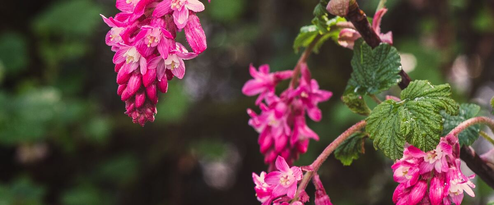

When to plant red-flowering currant in Colville, WA
Plant red-flowering currant shrubs in Colville Apr 1 – May 27.
- Difficulty
- Easy
- Sun
- Full sun to part shade
- Spacing
- 4 to 6 feet apart
- Planting depth
- Same depth as in the pot
- Frost
- Hardy perennial; comes back every year
- First harvest
- Blooms from late winter to early spring, starting the year after planting
Why these dates
Colville's typical last spring frost is May 2. As a hardy perennial, this crop doesn't need to wait for that date. In the Inland Northwest, though, the soil usually isn't ready to work until about April 1.
Inland Northwest. Higher, colder interior valleys. Cold springs and an earlier fall mean a shorter season; quick-maturing varieties pay off.
How to grow red-flowering currant in Colville
- Pick a sunny spot with soil that drains well, and mix in an inch or two of compost.
- Plant red-flowering currant shrubs Apr 1 – May 27, 4 to 6 feet apart. Same depth as in the pot.
- Water through the first two summers, then occasionally in drought. Prune right after flowering, cutting a few old stems to the base.
- Harvest: Grown for its flowers rather than fruit. The small blue-black berries are edible but bland; birds love them.
Key numbers
- Late winter–early springBloom
- 6–10 feetHeight
- Little once establishedSummer water
- HummingbirdsBest for
Growing notes
What makes the difference in Northwest gardens, in plain language.
Where it grows wild
Red-flowering currant grows naturally in open woods, forest edges and clearings, mostly west of the Cascades from British Columbia into California. It's a deciduous shrub that usually reaches 6 to 10 feet tall and a bit narrower. The hanging clusters of pink to deep red flowers appear in late winter or early spring, often before the leaves are fully out, which makes it one of the first native shrubs to bloom.
Planting and pruning
Plant in full sun to part shade in soil that drains reasonably well. More sun means more flowers and less powdery mildew. West of the Cascades, fall planting is ideal because winter rain settles the roots before summer. Water through the first two summers, then only during long droughts.
Prune right after flowering, since next year's blooms form on this year's growth. Cut a few of the oldest, woodiest stems to the base every year or two to keep the shrub young and full of flowers. King Edward VII stays a little more compact.
Wildlife value
The flowers open just as rufous hummingbirds return from the south in early spring, and they're one of the birds' most important early nectar sources. Native bees, including bumblebee queens, visit the flowers too. The small blue-black berries ripen in summer and get eaten by birds. Planting red-flowering currant is one of the easiest ways to bring hummingbirds into a Northwest garden.
Common questions
When is the last frost in Colville, WA?
Typically May 2. In 9 years out of 10, frost is over by May 17. These are 1991–2020 NOAA climate normals for Colville.
Is it too late to plant red-flowering currant in Colville?
The spring planting window runs through May 27. Potted plants can still go in later if you water them faithfully through their first summer.
How long until I can pick red-flowering currant?
Blooms from late winter to early spring, starting the year after planting. Grown for its flowers rather than fruit. The small blue-black berries are edible but bland; birds love them.
When does red-flowering currant bloom?
From late winter into early spring, usually around March, depending on the year and location. It's one of the first native shrubs to flower.
Are red-flowering currant berries edible?
Yes, but they're small, seedy and bland. Most gardeners leave them for the birds.
Does red-flowering currant attract hummingbirds?
Yes, it's one of the best plants for them in the Northwest. It blooms right as rufous hummingbirds arrive in spring.
Also plant in Colville around the same time
Planting dates for red-flowering currant in nearby areas
- Spokane, WA Apr 1 – May 27
- Pullman, WA Apr 1 – May 27
- Ellensburg, WA Apr 1 – May 27
- Omak and Okanogan, WA Apr 1 – May 27
- La Grande, OR Apr 1 – May 27
- Leavenworth, WA Apr 1 – May 27
Full planting calendar for Colville · Red-flowering currant in every city